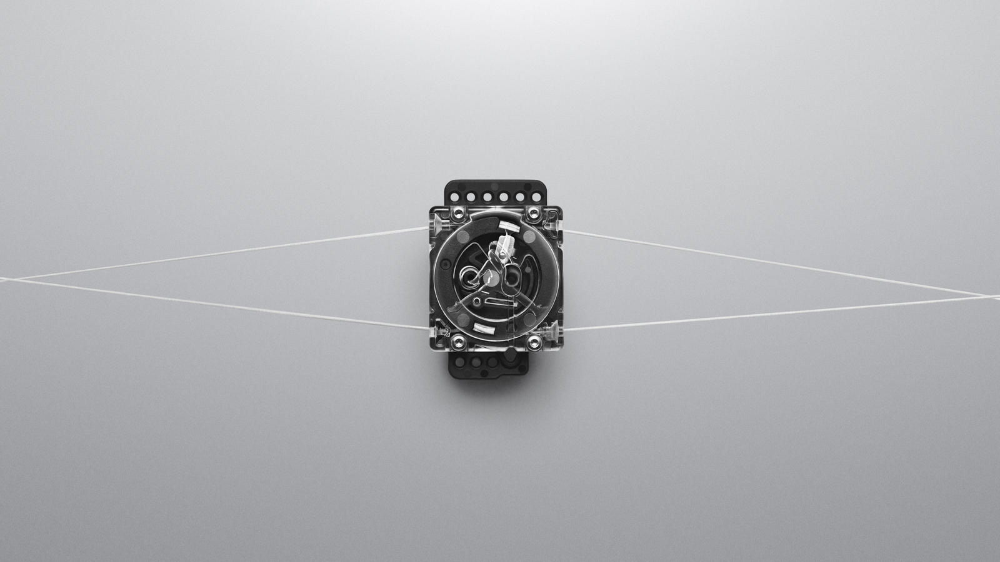

Brand Overview
With the success of Michael Jordan and him being an athelete under the Nike brand, his line of basketball sneakers became immensely popular in the basketball world. Eventually, the success and popularity formed Jordan shoes and apparel into its own brand as a subsidary of Nike. Even though older Jordan sneaker models have older technology and aren't worn much for basketball games, people still wear them to this day as lifestyle sneakers.
Notable Technologies
Flightspeed
Jordan Brand's Flightspeed technology is an enhancement of Nike's most used Air Zoom technology. As a cushion inside sneakers, Flightspeed allows weight to be spread out evenly and allows the energy of impact to return, making the sneaker-wearer to have more bounce and power.
FastFit
The FastFit technology is a mechanism that allows performance sneakers to work without laces and is the first of its kind in sneaker history. A tab on the sneaker's tongue can be pulled and the sneaker will instantly tighten up around the wearer's foot.